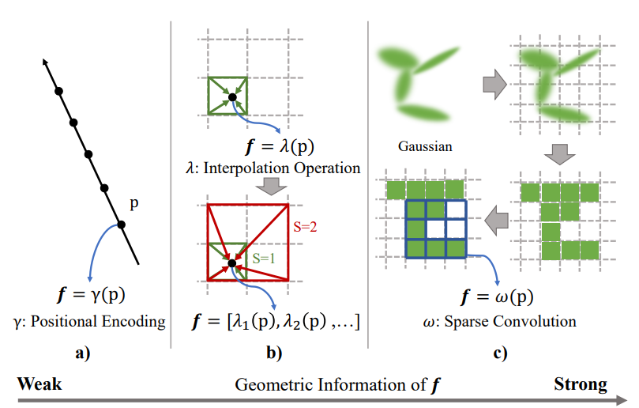
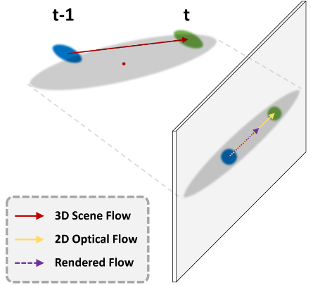
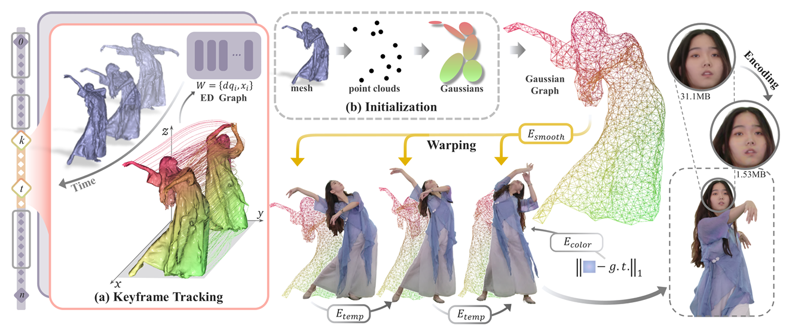

Gaussian Splatting在视频渲染中的现状，或者对于视频监督存在哪些不足（splatting的不足）
答：目前大多数3D Gaussian Splatting 的动态场景或动态人体重建任务中任然仅使用2D输入图像或视频进行监督。由于约束不足的性质，不能很好的从图像或视频创建4D高斯。虽然优化可以从输入视频中提取光度参考或由生成模型进行调节，但直接监督高斯运动仍未得到充分探索。
a) 为什么选择光流？我们的光流有什么新意？如果没有，如何改进我们的光流以适用于splatting？
答：目前的光流优化没什么新意但是有一些想法，可以将光流优化分为两个部分，一部分强调优化几何一致性，另一部分强调优化视觉一致性。
- 几何一致性：利用所有高斯球的不透明度以及相邻帧高斯球的位移，使用光栅化器渲染光流图，使用该预测的光流图和真值的光流图做损失（真值由现有模型预测而来）。适用于几何结构一致性较为重要的情况，通过直接约束高斯属性来优化物体在3D空间中的几何连贯性，减少物体的抖动和运动伪影。
- 视觉一致性：使用3DGS渲染器渲染当前帧RGB图，使用当前帧预测的RGB图与下一帧的真值RGB图计算光流1，再使用当前帧真值与下一帧真值计算光流2，使用光流1和光流2做损失（光流1和光流2都由现有模型预测而来）。适用于追求视觉效果的场景，通过在RGB图像上优化帧间的视觉过渡，使动态效果更平滑和自然，尤其适合动态纹理或亮度变化明显的复杂场景。
人类表面/姿势和形状的时空思路。
a) 为什么选择该时空方法？现有方法存在哪些问题和局限性？我们的模型有什么独特之处？为何以这种方式设计？
答：现有的大多数方法仅仅使用空间信息和人体姿势参数引导高斯建模，也有部分工作结合了时间信息做4D建模。但是在动态人体建模任务中想要对运动引起的细节变化进行建模不仅需要时空信息和人体骨架姿势信息的引导，还因该结合3D空间中的人体运动信息。虽然在我们的任务中结合了光流约束来建模运动信息，但是光流归根到底还是二维约束，仅管高斯光流由3D高斯集合计算而来，但依然是单视角运动信息的约束，不能够很好的捕捉到真正三维空间的运动信息。所以我们的方法结合3D人体参数化模板上顶点的运动信息和高斯距离网格顶点的距离让网络学习3D空间运动信息从而更精细建模人体表面运动细节。
b) 为什么使用基于3D SMPL的运动流？基于3D SMPL的流是否独特？如果是，请用更详细的技术进行优化。如果不是，探索我们独特的实现技巧和技术。
答：之所以使用3D SMPL顶点和当前帧高斯来计算人体运动信息是为了让网络解码出因为人体运动而产生的高斯位移，以更好地将运动信息建模出来。在目前的其他工作中绝大多数都只是采用人体姿势参数来当作条件引导高斯集合在不同姿势下发生偏移，也有部分工作使用光流约束进行场景建模，但是这些工作并没有在三维空间中对运动信息进行解码，因此网络缺乏对人体在三维空间中运动信息的理解。
c) 为什么使用哈希编码？我们的哈希编码有什么特别之处？为何以这种方式设计？
答：哈希编码本身没有什么特殊之处，就是使用的instant-ngp的哈希编码部分，方法中强调的并不是哈希编码，而是全局局部特征的结合。在目前的工作中都是对每一个高斯球的位置信息进行编码，这样缺乏全局信息的引入。为了获得局部信息我们使用intant-ngp中的多尺度哈希编码在16中空间分辨率下分辨编码高斯球位置信息，将每一种分辨率下的特征拼接得到多分辨率位置特征。因为在做哈希编码时分别考虑每个高斯球的位置信息，并没有考虑到每个高斯球和整体高斯集合之间的关系，所以在我们的工作中使用一个小型的MLP充当全局编码器，对整个高斯集合中所有高斯球的位置进行全局编码以弥补全局信息的不足。同时纯粹使用哈希编码时，可能会由于哈希碰撞或过于稀疏导致一些细节缺失的问题。因此，为了弥补不足我们添加了频域编码，由于其连续性和傅里叶变换的特性，能够有效地处理信号间的平滑过渡和插值问题，两者结合能够实现有效的互补。
d) 为什么要进行姿势约束？
答：使用姿势作为人体运动细节建模的条件是合理的，因为不同的人体姿势代表不同的人体动作信息，会引起人体表面细节的变化，所以在做运动细节建模时姿势条件是必不可少的。
e) 高斯skinning是否独特？或者在skinning处理过程中有什么独特之处？现有的高斯skinning方法存在哪些问题？
答：目前skinning的方法大概有两种一种是通过网络学习skinning权重，另一种是使用SMPL模型在规范空间的skinning权重在空间中进行扩散。后者通常是为了避免逆向蒙蔽迭代求根过程的运算过程从而实现加速。然而在我们的整个流程设计中从一开始就避免了逆向蒙皮的操作，因为我们维护的是定义在规范空间中的高斯集合，只需要进行正向蒙皮，所以我们采用蒙皮场来学习蒙皮权重。这也没什么特殊的。我们的过程中设计了自己的姿势优化模块以调整不准确的SMPL姿势和相机运动，通过将SMPL的关节位置参数，旋转参数，以及相机位移等参数设置为可学习参数。为了调整人体不准确姿势的同时增强动作连续性，我们使用相邻帧关节点计算加速度计算当前帧人体各个关节点位置，来约束当前帧关节点位置。

不同的变形模型利用了局部几何信息，但它们都有其局限性。a） 中，最初在 D-NeRF中，每个采样点的特征 （位置编码） 彼此独立提取。以下工作注意到，该方法无法处理复杂的动态场景，因为提取的特征包含来自相邻点的信息很少。在图b） 时，引入了插值来融合相邻网格的特征。NDVG和 RoDynRF逐渐提高体素分辨率，使大体素尺寸可以覆盖更大的区域，在训练的早期阶段引入了局部平滑度。但是，此策略的局部覆盖范围有限，在以后的培训阶段无法奏效。TiNeuVox和 SUDS使用多尺度进行插值。然而，插值操作在提取局部几何信息方面相当简单，并引入了不平滑和伪影。
要将 3D GS 的概念扩展到动态场景，一种简单的方法是合并时间维度，从而允许表示随时间变化的场景。用于动态场景重建的基于 3D GS 的方法通常可分为两大类。第一类使用其他结构化信息，如空间 MLP 或网格。有些工作为动态场景量身定制的可变形 3D 高斯。这些 3D 高斯是在规范空间中学习的，可用于使用隐式变形场（作为 MLP 实现）对时空变形进行建模。GaGS涉及一组高斯分布的体素化，然后使用稀疏卷积提取几何感知特征，然后将其用于变形学习。另一方面，第二类是基于这样一种想法，即场景变化可以通过专门设计的渲染过程编码到 3D 高斯表示中。例如，有些工作引入了动态 3D 高斯分布，通过保持 3D 高斯分布的属性随时间变化，同时允许它们的位置和方向发生变化，来对动态场景进行建模。虽然在高斯级别对动力学和变形进行建模方面取得了重大进展，但迫切需要探索对象级别的运动建模，这可能会为普遍的挑战提供解决方案，例如减少伪影和在长时间序列中精确捕获细粒度运动。
问题：这些基于 3DGS 的工作通常侧重于动态建模的设计。他们将帧视为离散样本，以适应随时间变化的轨迹或变形，同时忽略了连续 2D 观察下丰富的运动线索。由于动态 3DGS 涉及高斯的显式移动和变形，因此仅使用图像来监督重建是一个棘手的欠约束问题。该模型倾向于局部最优，其中高斯的时间一致性不像在物理世界中那样保持，特别是对于视点不足的情况。这会导致视觉过度拟合、性能下降和实践中的冗余建模。
问题：使用 3DGS 的可微渲染器将场景流投影到图像平面似乎是一个合理的解决方案。虽然渲染中的 α-blending 可以自然地处理透明度和遮挡关系，但在实践中我们发现，这种基于渲染的监督在应用于光流时性能不佳，有时甚至容易出现优化崩溃。这种现象可以从两个角度来解释。一方面，与深度不同，光流是在 2D 图像平面中定义和预测的，导致基于渲染的流监控存在不可忽略的差距。另一方面，长距离（理论上无限）高斯影响使优化容易受到噪声和数值不稳定的影响。

渲染流与实际光流之间的差距图示。由于前面有静态 Gaussian，渲染器生成的 2D 流被挤压。这不仅会导致监督错误，还会使前 Gaussian 在优化过程中错误地漂移。
GaussianBody: Clothed Human Reconstruction via 3d Gaussian Splatting：提出了一种按缩放分割的策略来提高点云密度，并提出了一种姿势优化方法来解决纹理模糊问题（就是将pose参数设为可学习然后全局优化）。
GVA: Reconstructing Vivid 3D Gaussian Avatars from Monocular Videos：引入了一种姿势优化技术，通过对齐法线贴图和轮廓来提高手部和脚部姿势的准确性。精确的姿势对于正确的形状和外观重建至关重要，其次，我们通过一种新的表面引导重新初始化方法解决了以前降低 3D 高斯化身质量的不平衡聚合和初始化偏差问题，该方法可确保 3D 高斯点与化身表面的准确对齐。
Robust Dual Gaussian Splatting for Immersive Human-centric Volumetric Videos：核心思想是使用对应的皮肤高斯和关节高斯分别表示运动和外观，这种明确的解耦可以显著减少运动冗余并增强时间一致性。
Drivable 3D Gaussian Avatars：不同于常用的线性混合蒙皮（LBS）变形方法，D3GA采用了经典的体积变形技术——笼子变形（cage deformations）。这种变形方式更适合于3D高斯基元，并且能够通过关节角度和关键点来控制较小规模的变形。
Animatable and Relightable Gaussians for High-fidelity Human Avatar Modeling：使用强大的基于 StyleGAN 的 CNN 来从2D的参数化模板中学习与位姿相关的高斯映射，以对详细的动态外观进行建模。
GART: Gaussian Articulated Template Models：通过可学习的前向蒙皮进行有效的动画处理，可以通过新颖的潜在骨骼方法捕获具有挑战性的变形，例如人体宽松的衣服。通过引入潜在骨骼，GART能够更好地处理非刚性变形，例如宽松衣物的运动，从而提高模型对复杂变形的表现力。
Human Gaussian Splatting: Real-time Rendering of Animatable Avatars
HUGS: Human Gaussian Splats：可以自由动画化的人类角色以及与其分离的静态场景表示。虽然初始化时使用了SMPL身体模型来代表人体，但HUGS允许3D高斯点偏离该模型，以捕捉未被SMPL模型涵盖的细节，如衣物、头发等。通过这种方式，HUGS能够在保持高效的同时，实现对复杂几何细节的高质量渲染。同时还联合优化了线性混合蒙皮（Linear Blend Skinning, LBS）权重，以协调个体高斯点在动画过程中的移动，从而保持表面的一致性和完整性。
GauHuman: Articulated Gaussian Splatting from Monocular Human Videos
HiFi4G: High-Fidelity Human Performance Rendering via Compact Gaussian Splatting：关键思想是将 3D 高斯表示与非刚性跟踪相结合，以便明确地解开运动和外观信息，以获得紧凑且易于压缩的表示。使用NeuS2方法获得每帧的几何代理，通过几何关键帧获得关键点的运动特征（位置参数等），后面利用密集采样插值初始化细腻高斯图，由粗到细建模运动细节。这种方法需要先建模出每帧的显示几何然后计算关键点的运动特征。
